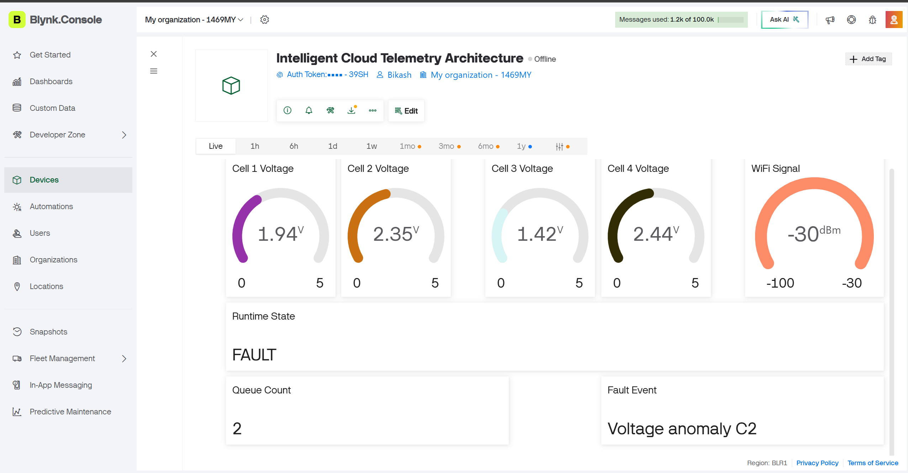

An advanced ESP32-based cloud telemetry architecture that performs intelligent event-driven communication using Blynk IoT Cloud. Instead of continuously transmitting data, the system sends updates only during battery state changes, voltage threshold violations, anomalies and fault conditions, reducing network traffic while ensuring reliable monitoring.

Smart event-driven cloud communication through the Blynk IoT platform.
Automatic WiFi reconnect with seamless cloud synchronization.
Real-time monitoring of four battery cell voltages.
Detects threshold violations, imbalance and abnormal conditions.
Offline events are stored and synchronized after reconnection.
Continuously measures wireless signal quality.